🚀 DEVOPS PROJE TESLİM RAPORU
1. Teslim Edilen Bağlantılar (Links)
2. Docker Yapılandırma Dosyaları (Docker Engine & Compose)
🔹 Frontend Yapılandırması
Dockerfile (Multi-stage Build & Nginx Production):
# Build asamasi
FROM node:20-alpine as builder
WORKDIR /app
COPY package*.json ./
RUN npm install
COPY . .
RUN npm run build
# Production asamasi (Nginx ile static servis)
FROM nginx:alpine
COPY --from=builder /app/dist /usr/share/nginx/html
EXPOSE 80
CMD ["nginx", "-g", "daemon off;"]
docker-compose.yml:
version: '3.8'
services:
frontend:
build:
context: .
dockerfile: Dockerfile
restart: unless-stopped
expose:
- "80"
🔹 Backend Yapılandırması
Dockerfile (Node.js Alpine Production):
# Node.js alpine imaji (hafif ve guvenli)
FROM node:20-alpine
WORKDIR /app
# Bagimliliklari kopyala ve yukle
COPY package*.json ./
RUN npm install --production
# Uygulama kodlarini kopyala
COPY . .
# Environment port ayari
ENV PORT=3000
EXPOSE 3000
# Uygulamayi baslat
CMD ["npm", "start"]
docker-compose.yml:
version: '3.8'
services:
backend:
build:
context: .
dockerfile: Dockerfile
restart: unless-stopped
expose:
- "3000"
environment:
PORT: ${PORT:-3000}
NODE_ENV: production
3. Ekran Görüntüleri ve Görsel Kanıtlar (12 Görsel)
📌 A. Genel Sistem ve Panel Görselleri
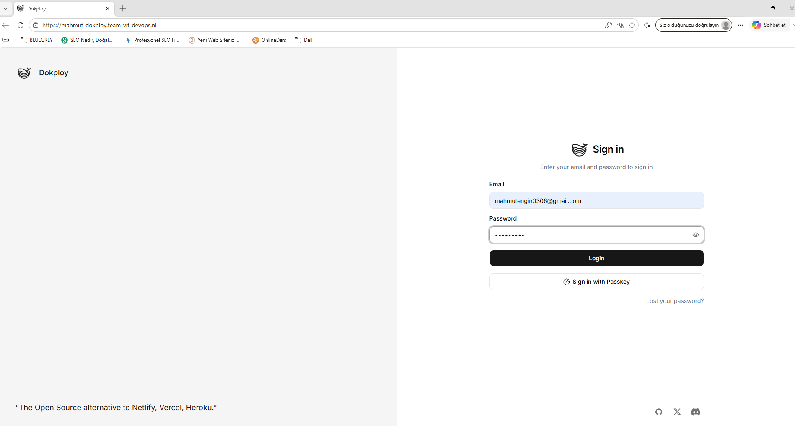
Görsel 1: Dokploy Güvenli Giriş Ekranı (HTTPS)
Dokploy PaaS yönetim paneline ait domain üzerinden SSL sertifikasıyla korunan güvenli giriş (Sign in) ekranı.
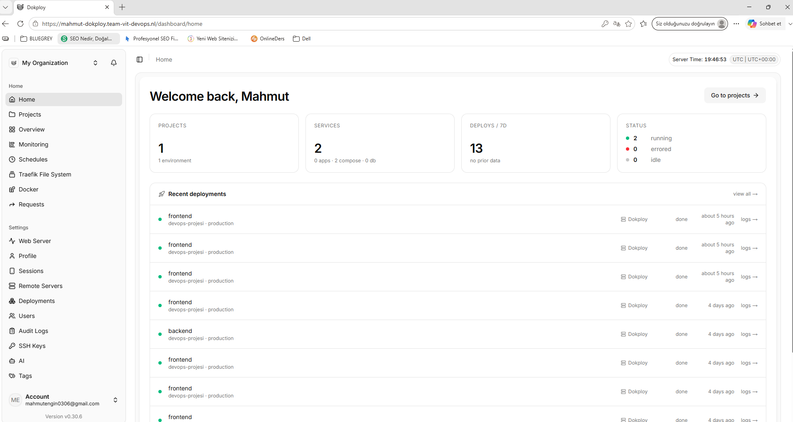
Görsel 2: Dokploy Proje Genel Bakış (Dashboard)
Dokploy üzerinde aktif çalışan Frontend ve Backend servislerinin durumlarını (2 running status), toplam deploy geçmişini ve VPS üzerindeki kaynak kullanımını gösteren kontrol paneli.
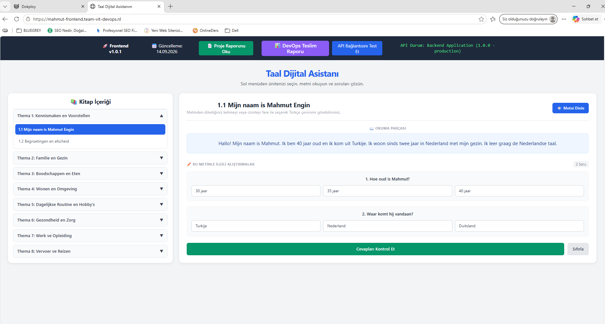
Görsel 3: Canlı Yayınlanan Frontend Uygulaması (Taal Dijital Asistanı)
Vite + Nginx container üzerinde canlı olarak yayınlanan, backend API servisi ile entegre biçimde çalışan projenin kullanıcı arayüzü.
📌 B. GitHub Entegrasyonu ve Auto Deploy Ayarları
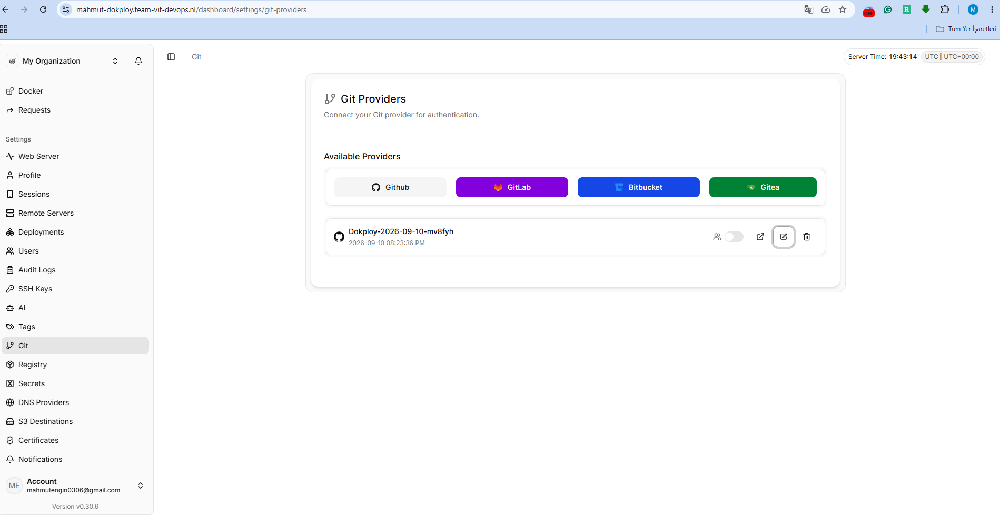
Görsel 4: Dokploy GitHub App Entegrasyon Listesi
Dokploy paneline bağlanmış aktif Git Sağlayıcısı (Dokploy GitHub App) görünümü.
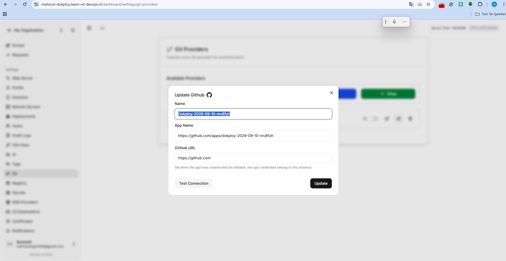
Görsel 5: GitHub Entegrasyon Detayı ve Bağlantı Testi (Test Connection)
Dokploy ile GitHub arasındaki API ve Webhook iletişiminin kurulduğunu doğrulayan yapılandırma ekranı.
📌 C. Frontend Deployment Logları ve Geçmişi
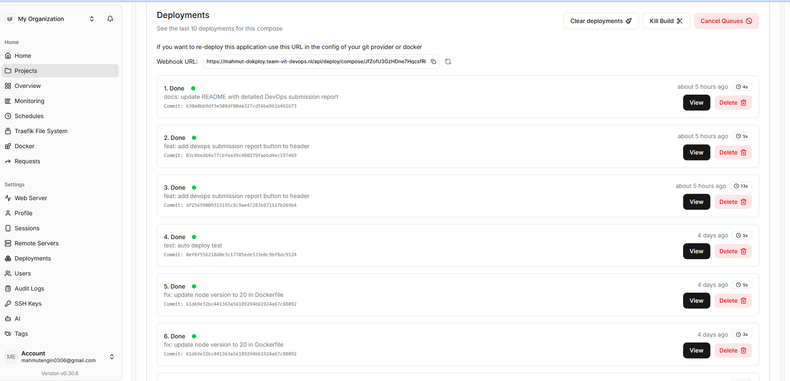
Görsel 6: Frontend Auto Deploy ve Deployment Geçmişi
Main branch'e yapılan commit'ler sonrası tetiklenen Webhook ve otomatik başarılı (Done) deployment listesi.
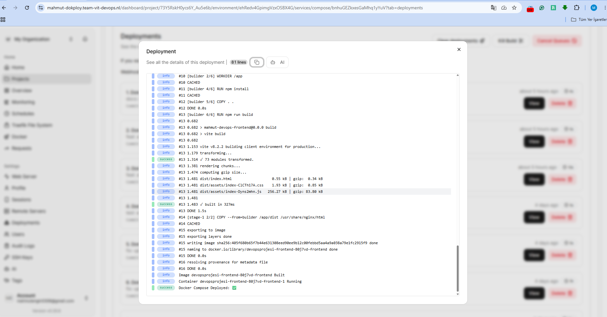
Görsel 7: Frontend Build ve Container Başlatma Logları
Multi-stage Docker build işleminin tamamlandığını ve Docker Compose Deployed: Yes çıktısıyla Nginx container'ın başarıyla ayağa kalktığını gösteren loglar.
📌 D. Backend Deployment Logları ve Geçmişi
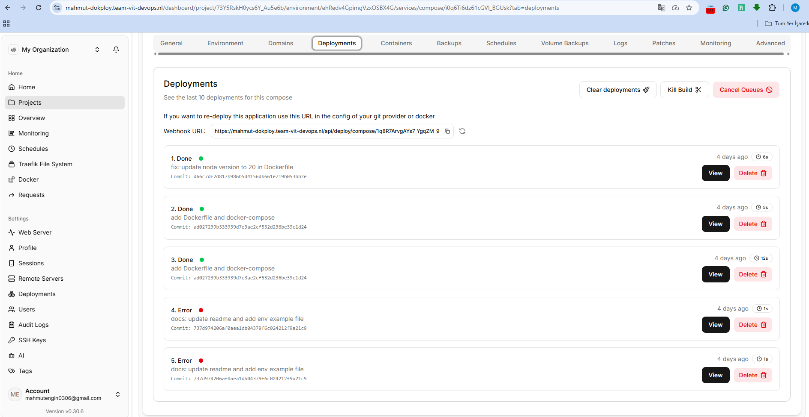
Görsel 8: Backend Deployment Geçmişi ve Webhook Yapılandırması
Backend servisine ait otomatik deployment geçmişi ve entegre edilen Webhook URL adresi.
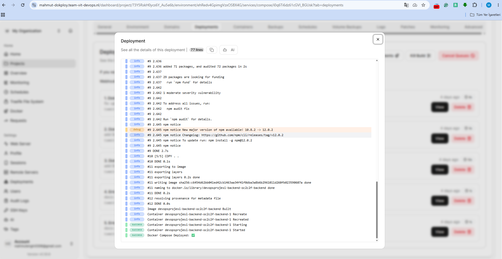
Görsel 9: Backend Build ve Container Logları
Node.js 20 Alpine imajının derlendiğini, npm paketlerinin yüklendiğini ve Container Started mesajıyla 3000 portunda başarıyla çalıştırıldığını doğrulayan loglar.
📌 E. HTTPS & SSL Sertifika Doğrulamaları (3 Domain)
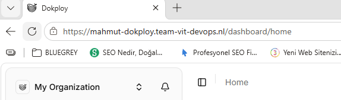
Görsel 10: Dokploy Panel SSL Doğrulaması
https://mahmut-dokploy.team-vit-devops.nl adresi üzerinde Traefik ve Let's Encrypt ile sağlanan güvenli HTTPS bağlantısı.
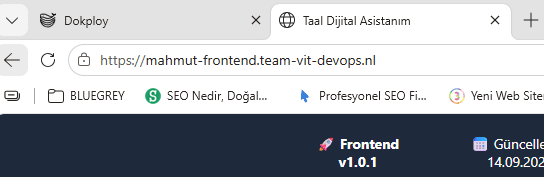
Görsel 11: Frontend Canlı Domain SSL Doğrulaması
https://mahmut-frontend.team-vit-devops.nl adresi üzerinde geçerli SSL kilit doğrulaması.
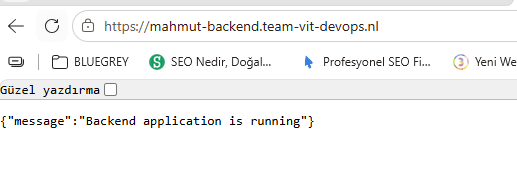
Görsel 12: Backend API SSL ve Health Check Yanıtı
https://mahmut-backend.team-vit-devops.nl adresi üzerinden HTTPS protokolü ile döndürülen başarılı canlı API yanıtı ({"message":"Backend application is running"}).
4. Mimarî ve Altyapı Açıklaması (Architecture Overview)
- Sunucu Altyapısı (VPS): Öğrenciye özel Ubuntu VPS üzerine Dokploy PaaS (Platform as a Service) ortamı kurulmuştur.
- Ters Proxy & SSL (Traefik + Let's Encrypt): Dokploy üzerinde çalışan Traefik ters proxy yöneticisi, yönlendirilen tüm domainler (
dokploy, frontend, backend) için otomatik Let's Encrypt SSL sertifikaları üretmiştir ve tüm trafik HTTPS üzerinden güvenle aktarılmaktadır.
- Konteyner Mimarisi (Docker Compose):
- Frontend servisi, Vite derlemesi sonrasında Nginx üzerinde çalıştığı için 80 portunu dinlemekte ve son derece hafif bir imaj boyutu sunmaktadır.
- Backend servisi, Node.js 20 Alpine imajında 3000 portunu dinleyen üretken bir API servisidir.
- Otomatik Deployment Flow (CI/CD Webhook): Dokploy paneli GitHub Provider App ile entegre edilmiştir. GitHub üzerindeki
main branch'ine yapılan her push işleminde GitHub Webhook tetiklenmekte ve Dokploy sunucu üzerinde git pull yapılmasına gerek kalmadan sıfır kesintiyle otomatik imaj build ve deployment (Auto Deploy) gerçekleştirmektedir.
5. Değerlendirme Kriterleri & Kontrol Listesi (Self-Checklist)
- Dokploy, frontend ve backend domainlerinin üçü de çalışmaktadır. (mahmut-dokploy, mahmut-frontend, mahmut-backend)
- Üç domain de Dokploy üzerinden Let's Encrypt sertifikasıyla HTTPS kullanmaktadır. (Tarayıcı kilit doğrulamaları tamamlandı)
- Frontend, backend API'ye production domaini üzerinden bağlanmaktadır. (mahmut-backend... canlı bağlantısı sağlandı)
- Frontend ve backend Docker Compose ile deploy edilmiştir.
- Dokploy, iki GitHub repository'sine başarıyla bağlanmıştır. (GitHub App ve Auto Deploy Webhook URL tanımlı)
- main branch'ine push sonrasında deployment otomatik başlamaktadır. (Auto Deploy geçmişi "Done" durumunda doğrulandı)
- Deployment için sunucuda manuel dosya kopyalama veya git pull yapılmamaktadır.
- Dokploy deployment logları başarılı tamamlanmaktadır.
- Backend health check başarılı sonuç vermektedir. ({"message":"Backend application is running"})
- Hassas bilgiler repository veya görsellerde açık tutulmamıştır. (Güvenlik yönetimi sağlandı)